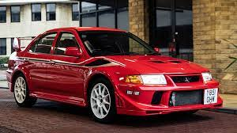
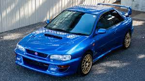
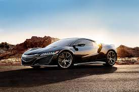
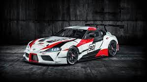

A Mitsubishi mint márka egy független japán multinacionális vállalatokat tömörítő cégcsoport, japánul "keirecu". Jelenleg legdrágábban értékeített Mitsubishi egy Mitsubishi Lancer volt 117 ezer dollárért.
Az Ivaszaki Jataró által 1870-ben alapított társaság cégei előbb hajózási, bányászati, majd banki és nehézipari tevékenységet folytattak, például a Mitsubishi Heavy Industries, Ltd (Mitsubishi Jūkōgyō Kabushiki Kaisha, Micubisi Dzsúkógjó Kabusiki Kaisa) állította elő a második világháború első felének leghatékonyabb vadászgépét, a Zerót, és itt készült a Muszasi nevű szupercsatahajó is. A háború után a zaibacut feloszlatták, vagyis a központi holdingtársaságot felszámolták. 1917-ben a Mitsubishi-birodalom hajói után megszületett az első sorozatban gyártott japán személyautó, a Mitsubishi A-modell. A ma több mint negyven óriásvállalatból álló Mitsubishi-cégcsoport a világ egyik legnagyobb és legkiterjedtebb ipari konszernje. Kevesen tudják például azt, hogy a világ egyik legnagyobb bankját a Mitsubishi tudhatja magáénak.
A boxermotor nagy híveként ismert Subaru japán autómárkát 1953-ban alapították. Az egyik legkiválóbb és legritkább gép, a Subaru Impreza 22B STi például az egyik legdrágább modellé lépett elő a 32 ezer dollárjával.
Hivatalosan 1953-ban hozták létre a Subaru japán autógyártó-vállalatot, ám gyökerei egészen 1915-ig nyúlnak vissza az időben. A sokáig repülőgépkutató-laboratóriumként működő Fuji Heavy Industries (FHI) átszervezésére 1932-ben került sor, immár Nakajima Aircraft Company Ltd. néven, mely a második világháború alatt Japán repülőinek egyik fő gyártójává vált. A háború után Fuji Sangyo Co., Ltd.-ként szervezték újra a vállalatot, ami repülőgép-alkatrészekből építette meg Fuji Rabbit nevű motoros robogóját 1946-ban. A japán kormány rendelete értelmében négy évvel később 12 részre osztották fel. 1953 és 1955 összesen hat vállalat egyesült, és újra létrejött a Fuji Heavy Industries. A vezetés azonban új vállalatot akart létrehozni autógyártásra, és mialatt elkezdték fejleszteni a P-1 kódnevű autót, megszületett a Subaru.
Az 1948 szeptemberében alapított Honda Motor Co. Ltd. létezése első percétől fogva kivételes színvonalú mérnöki teljesítményéről ismert. A nemsokára boltokba kerülő NSX lesz az eddigi legdrágább, Amerikában sorozatgyártott négykerekű a maga 156 ezer dolláros alapárával
A Honda már 15 éve működött, amikor elkezdett gépkocsikat gyártani, és újabb tíz évbe telt, mire a nemzetközi autóipar fontos szereplőjévé vált. A 80-as évek elején a Honda már vezető multinacionális vállalat volt. A Honda 1963-ban 136 járművet gyártott. Egy évvel később 5210, 1965-ben pedig már 8779 darabot, amelyek egynegyedét exportálták. A termelés ezután visszaesett 3209 járműre, egy újabb év elteltével, 1967-ben azonban ismét fellendült, nem kevesebb, mint 87 000 darabra. A siker kulcsa az erős hazai piac volt: 1968-ban 186 500, 1969-ben 232 000 járművet gyártottak, és a termelésnek csupán 5%-át exportáltak.
A Toyota legdrágább autója egy versenyautó, a Toyota GR Supra Racing mely akár 2millió dollárba is kerülhet.
Mire a Toyota a harmincas évek közepén elkezdett autókat gyártani már sok japán autógyár működött. A japán belpiac alaposan megerősödött, Amerika nagy érdeklődést mutatott a Toyotákra. Már Európában is egyre inkább elismerték a márkát: a fő betörési pontok közé tartozott Hollandia, Svájc és Dánia.1961-ben piacra került az egész Ázsiát meghódító, apró Publica (a Starlet távoli elődje), aztán 1965-ben 0,8 literes motorral hajtott, parányi sportkocsi, a Sports 800, majd 1966-ban a cég mindmáig legnagyobb sikere, a Corolla.
{kind=link}
{kind=link}
{kind=link}
{kind=link}